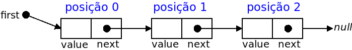

Neste problema deverá apenas submeter uma classe SinglyLinkedList<T> (e não um programa completo).
Use como base a classe SinglyLinkedList<T> (ver código | download de Node.Java e SinglyLinkedList.Java), que representa uma lista ligada simples e tem disponíveis métodos para adicionar ou remover um elemento no início ou no final, devolver o tamanho, saber se a lista está vazia ou retornar representação em string para escrita (tal como dado nas aulas).
Acrescente à classe dada um novo método public T get(int pos) que devolve o valor do nó na posição pos (assuma que as posições começam em zero). Se a posição não existir, o método deverá devolver null.
Deverá submeter apenas a classe SinglyLinkedList<T>, acrescentando o método get como pedido (e sem apagar nenhum dos outros métodos dados como base). Pode assumir que terá acesso no Mooshak à classe Node<T> (não a pode mudar) e se precisar pode criar outros métodos auxiliares. O Mooshak irá criar várias instâncias da sua classe e irá fazer uma série de testes ao método por si implementado.
| Lista inicial | Chamada | Valor de retorno |
|---|---|---|
| list = {2,4,6} | list.get(0) | 2 |
| list = {'a','b','c','d'} | list.get(3) | 'd' |
| list = {"estruturas","de","dados"} | list.get(3) | null |
| list = {"estruturas","de","dados"} | list.get(-1) | null |
Estruturas de Dados (CC1007)
DCC/FCUP - Faculdade de Ciências da Universidade do Porto